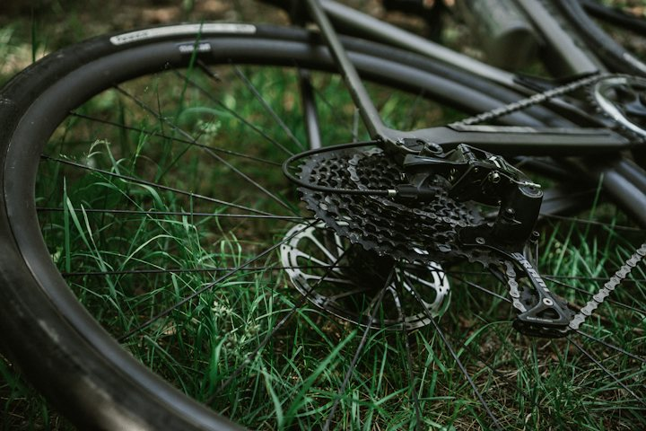

Warm-up · Why? Why? Why?

That is the problem. But is it the cause? Ask WHY until you find the root.
Ask "Why?" four times
Teacher notes · §1 Warm-up
Pedagógica
- Cada "Why?" lo dice el alumno en voz alta antes de revelar. Primero adivina, luego compara con la tarjeta.
- Si usa español para la causa, haz recast: "Ah, so it happened because…". Sin corregir en público.
- Máximo 4 minutos. La estructura (because / so / That's why) ya la conocen de S1; hoy se encadena.
Engagement
- "Cuando falla algo, casi siempre arreglamos el síntoma. Hoy buscamos la raíz."
- Cierra con: "Today you become a detective."
Crecimiento
- Anota cuántos 'whys' dio el grupo sin ayuda.
- Riesgo: Seguro. Temperatura: Mild.
Vocabulary · 12 words for finding causes
Tap to flip · listen to the word and the example
0 / 12 flippedSixty-Second Sell
Sold 0 / 41. You get one word and its "rival". You have 60 seconds to sell YOUR word. 2. Explain why this word, not the other: when, with whom, with an example. 3. The group decides: sold or not sold.
60 seconds
Teacher notes · §2 Vocabulary
Pedagógica
- Voltea cada tarjeta: tú dices la palabra, el alumno repite y da su propio ejemplo.
- VOC-10 Sixty-Second Sell (CONTRARRELOJ): 60 segundos para defender por qué esta palabra y no su vecina (síntoma/causa, arreglar/prevenir, evidencia/opinión, notar/revisar). El grupo vota. La regla de oro: el punto sale de producir lengua (ejemplo, diferencia, because), no de la velocidad.
- Si un par resulta intercambiable para el alumno, es señal de que aún no distingue; dale el ejemplo del recuadro.
- Grupo: el que vende habla; los demás votan en el chat. 1:1: el maestro vota y pide un contraejemplo.
Engagement
- Cierra: "I sold __ words out of four."
Crecimiento
- Estas 12 palabras sostienen S4 y la misión del Bloque 5 (responder una duda).
- prevent y evidence reaparecen en S12 (Plan A vs Plan B).
Grammar · Chain the causes
Read the chat. Which words connect cause and result?

Why did the machine stop?
It stopped because the belt broke.
And the belt?
Nobody checked it, so it broke. The root cause is the missing check.
Chain the causes until you find the root
1 · Go back
The machine stopped because the belt broke.
2 · Go forward
Nobody checked it, so it broke.
3 · Name the root
The root cause is the missing check.
| Statement, negative, question | Notice | |
|---|---|---|
| + | The belt broke because nobody checked it. | Because + the cause. Then ask Why? again. |
| − | The problem isn't the road. The root cause is the late order. | Say what it is not, then what it is. |
| ? | Why did it happen? Because the order wasn't ready. | Ask "Why?" up to four times. |
Today you only chain causes with because, so, That's why and The root cause is. Comparing options comes in Block 2.
¿Qué es? Una cadena de causas: sigues preguntando Why? hasta llegar a the root cause (la causa raíz).
¿Cómo se usa? The machine stopped because the belt broke. The belt broke because nobody checked it. The root cause is the missing check.
¿Para qué hoy? Para dejar de arreglar solo el síntoma y explicar de dónde viene el problema.
Cuidado: no se mezclan. The belt broke, because so the machine stopped. → The belt broke. That's why the machine stopped.
Bet the Sentence
Score 01. Decide: correct or wrong. 2. Bet 1 to 3 points BEFORE the check. 3. Right = you win the bet. Wrong = you lose it. Say the repair out loud.
Follow the Whys: delivery arrived two days late
Mistakes at this level
Teacher notes · §3 Grammar
Pedagógica
- Un solo foco: encadenar causas hasta The root cause is…. Explicación continua ≤5 min; el botón en español está oculto por defecto.
- GRM-01 Bet the Sentence (APUESTA, mecánica): seis oraciones, unas correctas y otras no; se apuesta antes de discutir. Después, Practice B (meaningful): seguir los 'why' hasta la causa raíz.
- Error prioritario: mezclar because con so / That's why, y root cause is because.
- Límite de nivel: sin hipótesis ("if the check…"). Sin 'as a result of'.
Engagement
- "Tres cosas, un mismo problema. Hoy las pegas con la cadena de por qués."
- Cierra: "My final bet score is __."
Crecimiento
- Integra todo el Bloque 1 (S1–S3). Reaparece en Listening (because ×2, so ×2, That's why ×2), Speaking y Mission.
Listening · Who is right?
A delivery arrived late. Greg and Mei Lin disagree about the cause. You are the judge.
Practice audio (browser voices). Final audio: record with ElevenLabs.
What are they arguing about?
Who's right? Decide, then defend with two quotes
The argument
Greg · US English · male · natural pace | Mei Lin · Singapore English · female · natural paceListen · repeat · record your best
Teacher notes · §4 Listening
Pedagógica
- LIS-10 Who's Right? (RANKING): dos personas discuten; el alumno arbitra y defiende con dos citas del audio. Ninguna postura es absurda: Greg tiene un dato real (40 minutos perdidos), Mei Lin tiene la causa raíz.
- Primera escucha: tarea global. Segunda: decidir y elegir las dos citas. El guion se muestra al final.
- Guion: 191 palabras (B2: 180–300), 2 hablantes. Contiene because ×2, so ×2, That's why ×2 y léxico: symptom, root cause, evidence, prevent, check.
- Para grabar: Greg = inglés de EE. UU., hombre, ritmo natural · Mei Lin = inglés de Singapur, mujer, ritmo natural. Acento no nativo (cumple 1 de cada 3 guiones).
- Answer key. Global: they disagree about the cause of a late delivery. Quién tiene razón: Mei Lin (root cause: the order was not ready because nobody checked the list). Citas ganadoras: "The delay started in the warehouse." · "Packing finished at eleven forty." · "The plan said nine o'clock." (cualquier par). Detalle de Greg: lost forty minutes / closed bridge.
Engagement
- "Who do you believe, the one with the loud problem or the one with the evidence?"
- Anota cuántos eligieron citas de Mei Lin.
Crecimiento
- "In the mission you find the root cause, with evidence."
Speaking · Explain it to the wrong room
1. Student A explains the problem on the card to Student B, who does NOT know this area. 2. B asks "Why?" and then DECIDES what to do first. 3. B repeats the decision. If B is wrong, A explained badly.
Did it work?
Tap what happened. Points come from producing English, not from speed.
12 questions · always 2 follow-ups
Teacher notes · §5 Speaking
Pedagógica
- SPK-11 Wrong Room (OCULTAMIENTO, mediación): A explica un problema de "su área" a B, que no la conoce y debe decidir. Si B se equivoca, la explicación falló: el resultado se mide en la decisión de B.
- Grupo: parejas en breakout; el maestro comparte la tarjeta solo con A (botón "Hide the card" antes de que hable B). 1:1: el maestro es B y decide mal a propósito una vez.
- Anota 2 aciertos y 3 errores repetidos (because + so juntos) para §7. Entre rondas usa las 12 preguntas.
Engagement
- Cierra en voz alta: "B decided correctly because A explained the root cause."
- "The best explanation is the one that lets somebody else decide."
Crecimiento
- Puntaje: se gana por producir lengua, nunca por contestar rápido.
- Riesgo: Seguro (casos ficticios). Es mediación: antecede a Block 5 (responder dudas).
Mission · Case closed
The Root Cause Detective
You are the detective. Three case files are on your desk. Find the root cause of each one and brief your team.
Group: each case goes to one student in a breakout room. Your partner asks "Why?" once per case. Rotate every 3 minutes.
1:1: you brief the teacher after each case. The teacher asks "Why?" twice per case.
Success: 3 case files, each with the main problem, the chain of causes with because, the root cause, and one fix plus one prevention.
Teacher notes · §6 Mission
Pedagógica
- Marca cada movimiento solo cuando el alumno lo dice sin leer la tarjeta.
- Evidencia observable: problema principal, cadena con because, The root cause is…, arreglo y prevención. Se registra en el portal. Clave de respuestas visible solo en Teacher view.
- No interrumpas: el feedback va en §7.
Engagement
- Anuncia en voz alta: "__ of 12 moves. Case closed!"
Crecimiento
- "In Session 5 you decide when a leader should step in."
- Conecta con la tarea final: explicar un problema y su causa en 3–4 minutos.
Wrap-up · Better the second time
✓ Success
↑ Upgrade
✎ Repair
↻ 2nd try
Repeat one briefing with the teacher. Use the upgrades. Same task, better English.
60 seconds · 5 questions
My second try is better because…
You can find and say the root cause.
Homework: write 5 sentences about a real problem at home or work. Ask Why three times. Finish with The root cause is… Next: Session 5.
Teacher notes · §7 Wrap-up
Pedagógica
- Máximo 2 aciertos y 3 correcciones de alto valor, anónimas. Luego segundo intento de un caso contigo.
- Exit quiz en voz alta: el alumno dice la respuesta antes del clic.
Engagement
- Compara con la frase del §1: "Minute 1: 'the tire is flat'. Minute 58: a root cause."
Crecimiento
- Registra: checklist de la misión, puntos de las apuestas, ventas del Sixty-Second y resultado de Wrong Room.